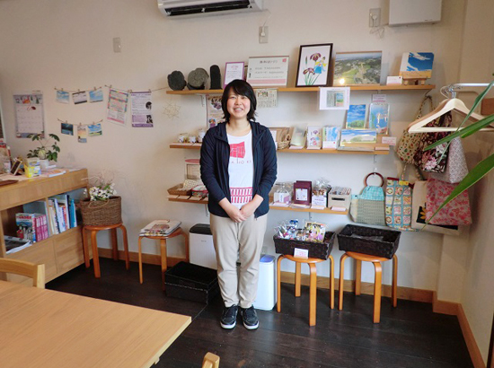

被災地のいま 宮城県・福島県の現状
3.11を忘れない・・
みやぎ生協から被災地・宮城のいまをお伝えします
第65回 2019年1月5日 ―復興を担う女性たち―
「小さな人々にスポットを当てたい」
タガの柵（き）
多賀城市は、千年前の大津波が古文書（※）に記されている町です。貞観地震によるもので「千年に一度の大津波」という表現はここから来ています。東日本大震災では工業地帯や市街地を津波が襲いました。大きな製油所火災が起き、浸水域は町の3分の1に及びました。
「いま街を歩くと、本当に津波が来たの？と思うぐらい復興はした。でも小さなところに目を向けるとまだまだだと思う」。多賀城市でコミュニティカフェ「タガの柵」を運営する松村正子さんは、そう言います。
松村さんは震災後ふるさとの多賀城に戻り、母親が参加していたまちづくりの市民活動を手伝うなかで、地元の小さなお店や商品の作り手と知り合います。「震災で苦労して再建した話やこだわりを持ってモノを作っている話を聞き、その感動を地域住民や観光客にも届けたいと思ったんです」。
松村さんは地元の小さな店や作り手の思いが伝わる商品を販売できる場所をつくろうと考え、起業家育成の講座に通ってノウハウを身につけます。そうして2014年夏、JR陸前山王駅の目の前に「タガの柵」をオープンさせました。
「タガの柵」のユニークなところは、地元の店と連携した体験ツアーやイベントにも取り組んでいることです。商店街ツアー、味噌づくり体験、コーヒー教室などお店の人と交流しながら、多賀城の魅力を知る内容になっています。「復興の大きな歩みのもとでは目立たないが、震災を乗り越え、地道に歩んできた“小さな人々”にスポットを当てたい」という松村さんの願いが、そこには込められています。
震災を学ぶツアーも行なっています。「ツアーで回ったお店の人が自分たちでさえ震災を忘れることがあるのだから伝えていかなければ、と言っていた。時間が経ったから喋れるという人もいる。復興した街並みを見るだけでは伝わらない部分を伝えていくのも大切だと感じています」。
タガの柵には様々な人が集います。「多賀城で新しい活動をしたい、被災した地元に何か還元したいと考えている人たちを応援し、つなぐ場でありたい」。松村さんの考える多賀城の復興とは、そうした“小さな人々”が生き生きと活躍できる町になること。ふるさとへの思いをタガの柵に託して、発信を続けています。
※『日本三大実録』 869（貞観11）年、貞観地震による大津波が陸奥の国府多賀城まで押し寄せ、千人が死亡したと記されている。
タガの柵 http://taganoki.wixsite.com/home

▲松村正子（まさこ）さん。
店内には古代米、わかめスープ、焼菓子、コーヒー、ハチミツなどメイドイン多賀城の商品が並んでいます。
前の記事
第64回「―復興を担う女性たち―「復興の目撃者になってください」ホテル・エルファロ共同事業体」（2018年12月5日）